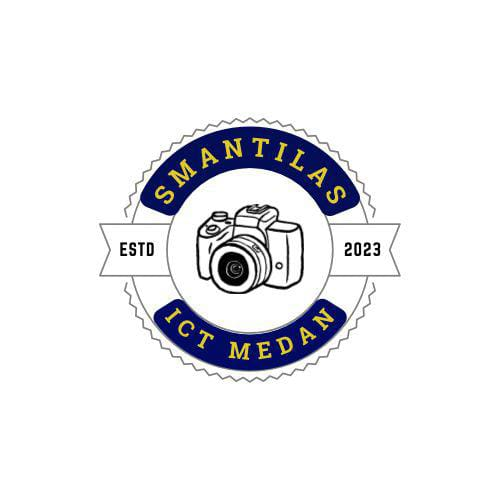

HOME
ABOUT US
CONTACT US!

TENTANG EKSKUL ICT SMAN 13 MEDAN
Ekstrakurikuler ICT (Information, Communication, and Technology) SMA Negeri 13 Medan merupakan organisasi intrasekolah yang berfokus pada pengembangan minat/bakat siswa dalam bidang teknologi, fotografi/videografi, jurnalistik, serta editing foto/video.
Jadwal latihan ekskul kami dilaksanakan setiap hari Jumat pada pukul 14:00 WIB.
Kalau kamu berminat dengan ekskul kami, yuk daftar sekarang melalui halaman 'Home' website ini!
VISI & MISI ICT SMAN 13 MEDAN
VISI
Menjadi ekstrakurikuler yang unggul dalam bidang teknologi, informasi, dan komunikasi dengan mengembangkan keterampilan, inovasi, serta kreativitas siswa dalam era digital.
MISI
1. Meningkatkan keterampilan siswa dalam bidang teknologi informasi dan komunikasi.
2. Mendorong kreativitas dan inovasi siswa.
3. Memfasilitasi kegiatan kolaboratif antar siswa.
STRUKTUR EKSKUL ICT SMAN 13 MEDAN
KEPALA SEKOLAH
PEMBINA EKSKUL
KETUA EKSKUL
Hj. Fauziah Hasibuan, M.Si
Havifah Sutan Nur
Aulia Saufi